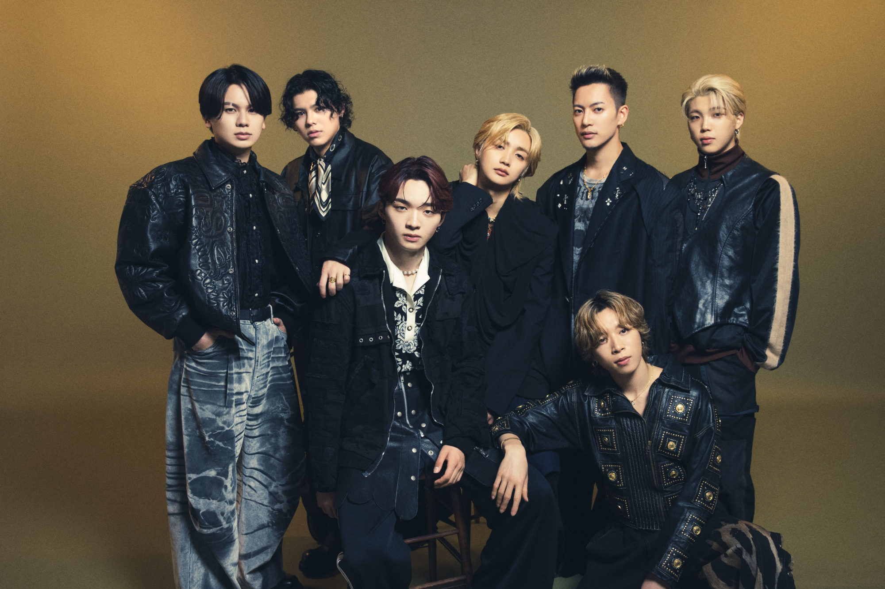

AAAのSKY-HI率いるBMSGに所属する7人組ダンス&ボーカルグループ。
BE:FIRST（ビーファースト）は、日本の7人組ダンス&ボーカルグループ[1]。BMSG所属。SKY-HI主催のボーイズグループ発掘オーディション『THE FIRST（ザファースト）』から誕生。
『第102回全国高校サッカー選手権大会』応援歌
「ZIP!」 内で放送されるドラマ「サヨウナラのその前に」の主題歌
TVアニメ『ONE PIECE』の「SPECIAL EDITED VERSION『ONE PIECE』魚人島編」のエンディング主題歌